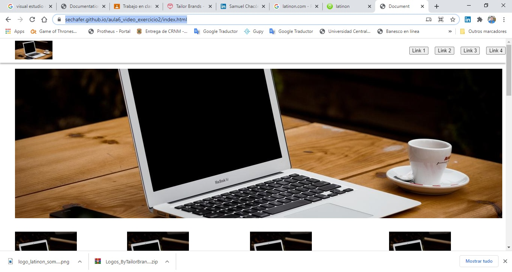

Hola!
Soy samuel, entuciasta de la tecnologia interesano en aprender mas cada diay crecer en proyectos desafiantes.
Tengo experiencia en domotica, tecnologia de streaming de video y electrcidad.
En la actulidad fui seleccionado en toti para un curso de formacion Fullstack 
Formacion
2008 - 2016
Universidad Central de Venezuela
Ingenieria Electrica
2017 - 2029
Maestria en adminsitracion de Empresas
Maestria en administracion de empresas
Experiencia
Marzo 2020 -Actulidad
Soporte tecnico para Dell Tecnology
Tercerizado Sitel Brasil
Jul 2012 – 2020
Coordinador de comuncaciones unificadas
Dirigir , coordinar y supervisar: la comunicación con las entidades públicas o privadas, ya sean ministeriales o de otras instituciones que lo soliciten. Utilizando sistemas de videoconferencia del cliente y/o la empresa Cantv para este propósito, supervisar la operación de los sistemas de videoconferencia de la estatal Cantv, así como del personal que los operan y estan bajo la coordinación.
sep 2017 – 2019
Senior Performance Engineer
Desarrollo e implementación de proyecto de videoconferencia basado en webrtc. Coordinar la configuración Amazon AWS en focando en servicios como EC2, S3 y ClaudFront para optimizar costos.
Projetos como desenvolvedor
Proyecto Melodiconline
Escuela de musica online

Encargado de configurar y administar los servidores de videoconferencia basado en webrtc en AWS de Amazon.
Receta de Torta Tres Leches
Practica de Html
Usando conceptos de eitquetado en Html.
Practica sobre CSS3
Uso de GRID y menu flotante
Es una muestra de distribucion de contenido en Grid usando menu flotante con botones
Colaboraciones en proyectos sin fines de lucro
Proyecto aula canaimita
Proyecto participante de Cantv Innova 2016 y ganador del mismo concurso
Este proyecto se encargaria de usar los pc de dados por el gobierno de venezuela a los niños en video conferencia basadas en H323
Iot colaboracion para Isoc-Venezuela
Este proyecto fue una colaboración para Isoc Capitulo Venezuela donde se relizaron demos sobre uso de Iot en el hogar y autmatización, este proyecto fue seleccionado para un concurso de participación mundial en el concuso Chapperton dentro de ISOC.
Modernización de las instalaciones eléctricas de las bombas de agua de condensación de las plantas de refrigeración # 1 y 3 del Metro de Caracas
Modernización de las instalaciones eléctricas de las bombas de agua de condensación de las plantas de refrigeración # 1 y 3 del Metro de Caracas. Facultad de Ingeniería. Escuela de Ingeniería Eléctrica. Trabajo Especial de Grado para Optar al Título de Ingeniero Electricista. Tutor: Alexander Cepeda. Universidad Central de Venezuela. Caracas.
Comunicate!
Llene el formulario y le reponderé los más pronto posible.
Pueden encontrame tambien en mis redes sociales :

+55 (11) 933880101

sechafer@gmail.com